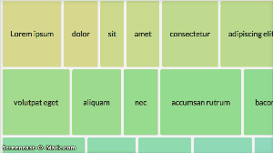
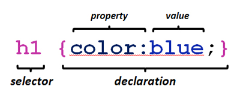
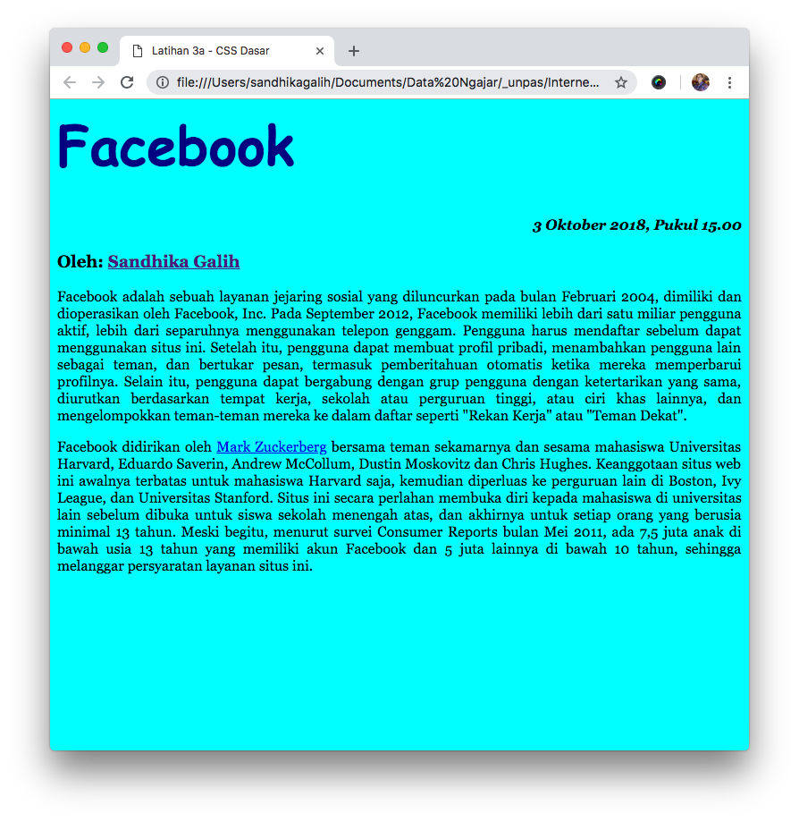
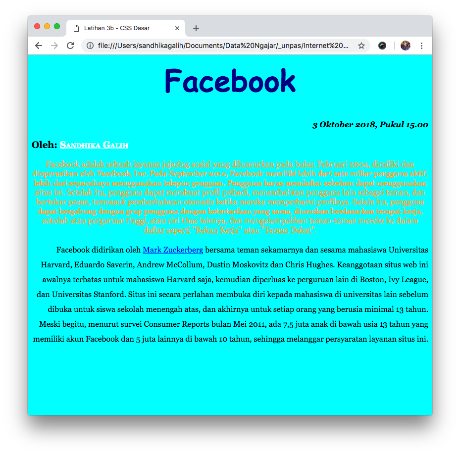
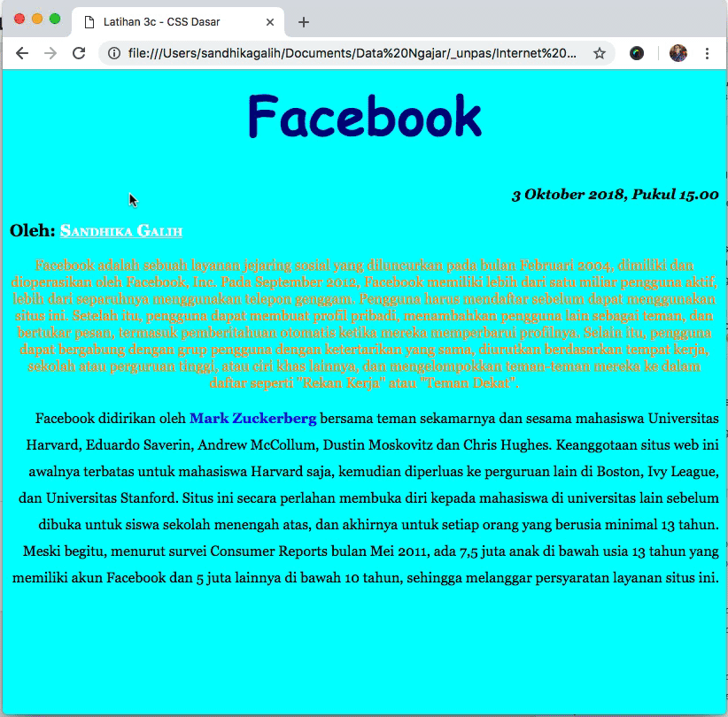
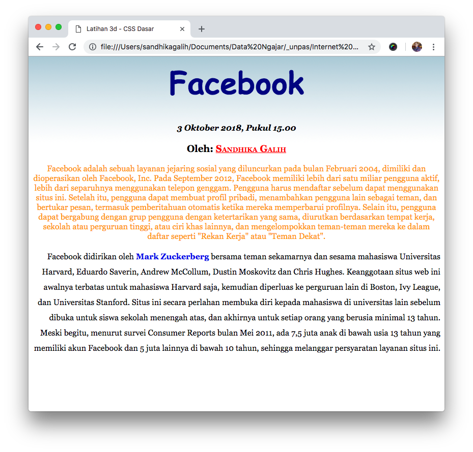

| Modul 3 CSS Dasar |
CSSAdalah Sebuah script yang dapat mengatur dan mengontrol tampilan halaman web serta memisahkan antara tampilan dan konten halaman web. Berikut adalah salah satu contoh pemanfaatan CSS dalam membuat sebuah animasi sederhana.  |
Struktur Penulisan CSSDalam menggunakan CSS terdapat struktur yang harus anda ikuti, struktur ini digunakan agar browser mengerti apa yang anda ketikan. Berikut ini adalah struktur penulisan sebuah script CSS. Keterangan: - Kerjakan semua latihan yang diperintahkan - Gunakan Code Editor untuk mengerjakan (Sublime Text 3 / Visual Studio Code) - Beri nama file sesuai ketentuan (cth: L2a043040023.html / L2a043040023.css) - Lihat hasilnya pada browser setiap kali selesai mengerjakan satu latihan |
akses CSSada 3 cara mengakses CSS yaitu
|
Class-IdSetiap style css dibedakan berdasarkan selectornya. Terdapat dua selector yaitu class dan id.
|
CSS TextDigunakan untuk memanipulasi tulisan pada Halaman web.Pelajari Property & Value pada CSS Text disini. |
CSS FontDigunakan untuk memanipulasi huruf pada Halaman web.Pelajari Property & Value pada CSS Font disini. |
CSS List & MarkerDigunakan untuk memanipulasi list pada Halaman web.Pelajari Property & Value pada CSS List & Marker disini. |
CSS BackgroundDigunakan untuk memanipulasi Background pada Halaman web.Pelajari Property & Value pada CSS Background disini. Pada latihan kali ini kita akan mencoba meletakan gambar sebagai background pada halaman web. sebetulnya gambar tidak hanya dapat diletakkan pada background halaman saja, tetapi juga dapat diletakkan pada background sebuah elemen. |
Pseudo classsyntax pseudo class : selector.class:pseudo-class {property: value} Biasanya pseudo class digunakan untuk memberikan style pada link atau pada elemen ketika akan berinteraksi dengan kursor (mouseover / klik). a:link {color:#FF0000; text-decoration:none;}
Tips & Trik |
HTML Block & ElementHTML Block ElementsBlock Elemen pada dasarnya sudah memiliki baris baru setelah dan sebelum elemennya. Contoh Elemen: <h1>, <p>, <ul>, <table>HTML Inline Elements Inline Elemen ditampilkan tanpa baris baru pada halaman. Contoh Elemen: <b>, <td>, <a>, <img> Mengubah Elemen Block/InlineSebuah elemen HTML, dapat kita ubah perilakunya dengan menggunakan properti css display. Contoh:p { display: inline; } img { display: block; } |
HTML <div> & <span>HTML <div>
HTML <span>
|
CSS DimensionBerfungsi untuk mengatur ukuran (panjang & lebar) sebuah elemen. Terdiri dari :
Untuk belajar lebih lanjutBisa dipelajari link berikut : |
| Latihan 3a |
buka file .txt dibawah ini, lalu copy kan isinya ke sebuah file HTML dan simpan dengan nama:L3a<NRP>.html>> download file latihan 3a <Buatlah file css dan hubungkan ke file html tadi, dengan spesifikasi dibawah ini (cari sendiri atribut CSS yang sesuai), simpan dengan nama:L3a<NRP>.css
sehingga hasilnya seperti ini :*Buka Halaman Referensi untuk melihat properti css yang tersedia. Halaman Referensi Tips & Trik |
| Latihan 3b |
modifikasi file html dan css pada latihan 3a, simpan dengan nama :L3b<NRP>.htmlL3b<NRP>.css Lakukan modifikasi (ubah/tambahkan) pada kode HTML / CSS sehingga menghasilkan tampilan seperti ini :*Buka Halaman Referensi untuk melihat properti css yang tersedia. Halaman Referensi Tips & Trik |
| Latihan 3c |
modifikasi file html dan css pada latihan 3b, simpan dengan nama :L3c<NRP>.htmlL3c<NRP>.css Lakukan modifikasi (ubah/tambahkan) pada kode HTML / CSS sehingga menghasilkan tampilan seperti ini :*Buka Halaman Referensi untuk melihat properti css yang tersedia. Halaman Referensi Tips & Trik |
| Latihan 3d |
modifikasi file html dan css pada latihan 2c, simpan dengan nama :L3d<NRP>.htmlL3d<NRP>.css download gambar berikut ini sebagai background : <background image>Lakukan modifikasi (ubah/tambahkan) pada kode HTML / CSS sehingga menghasilkan tampilan seperti ini :*Buka Halaman Referensi untuk melihat properti css yang tersedia. Halaman Referensi Tips & Trik |
Keterangan Pengiriman Tugas
|